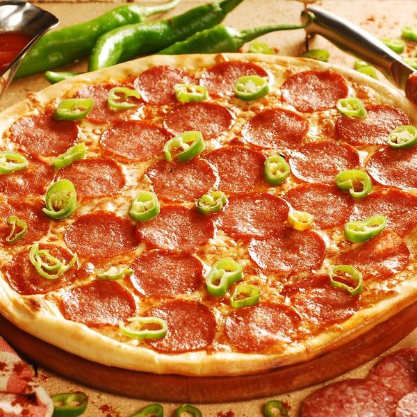

Pizza Diavola

In Italian, pizza diavola means “deviled” pizza. And in this case, deviled means one thing: spicy.
My absolute favourite pizza!
Ingredients
- 300 gm canned peeled tomatoes
- 1 tbsp olive oil, plus extra to serve
- 120 gm thinly sliced hot salami
- 1-2 pickled jalapeños, or to taste
- 200 gm thinly sliced scamorza, diced
Steps
- For dough, combine oil, yeast and 2 tbsp lukewarm water in a bowl to dissolve yeast. Combine flour and 1 tbsp salt in a bowl and make a well in the centre. Add 680ml water and yeast mixture to well and mix with your hands to form a sticky dough (3-4 minutes). Cover with plastic wrap to hydrate (15 minutes), then knead on a lightly floured bench until smooth (2 minutes). Return to bowl, cover with plastic wrap and refrigerate to ferment (24 hours).
- Strain tomato (reserve juice for another use; it's good for Bloody Marys), then press through a colander into a bowl. Add oil, season to taste with salt and stir to combine.
- Preheat oven to 230°C or highest setting and preheat a pizza stone (see note). Portion dough into six on a lightly floured surface. Working with one piece at a time, place lightly floured hands around the dough and pull it towards you along the bench so the leading edge pulls under. Rotate, tucking edges under, and repeat to form a smooth ball – the aim is to create tension in the dough. Repeat with remaining dough, transfer to a greased tray, cover loosely with greased plastic wrap and rest at room temperature until doubled in size (1½-2 hours).
- In batches, invert dough onto a floured surface. Heavily flour the top, then flatten to a 30cm round, pushing outwards from the centre using your fingers, without pressing on the edge so you get a good crust. If you have a pizza slide, assemble on a well-floured bench; if you don't, transfer bases to a floured pizza tray with holes to assemble (see note). Brush 2cm around the edge with olive oil for a crisp crust. Spread tomato mixture to reach edge of crust, place salami slices on top, touching but not overlapping, then jalapeños, then scatter with cheese. Transfer to pizza stone with a pizza slide or transfer tray onto stone in oven and bake until puffed and golden brown (10 minutes). Season to taste with salt and olive oil and serve.